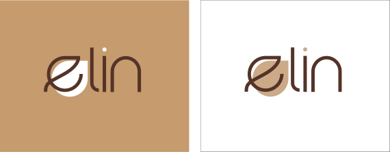

Elin Campaign
Colour Study
Colour is one of the most powerful aspects of our visual environment. Since our product is from a leaf extract, we consider green tone as the primary colour of the logo. However, in the context of our product, we want to emphasize elegance and classiness, so we choose a brown and gold accent. The colours we choose for the logo serve the purpose of communicating the values of the brand while reflecting the natural aspect of the product itself..
Logo Application
The logo has two type of variants. The brown background, the dark ground and the white background. Each can be used depending on space available and how well it works with the design of the piece it will be used on. Use of the full-colour logo versions on a white background is preferred. Alternate colour versions and a usage guide are shown on pages 19 to 21.
Creating A Safe And Inclusive Basketball Community
Join us in our mission to end bullying in basketball. Watch our powerful video and discover how you can be part of the movement towards a safe and inclusive environment for all players.